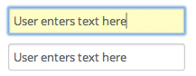

Forms
After tables, these are the main interactive elements on Labguru. They should be made up of the simplest elements possible, and little used functions designed to be inobtrusive. The final design chosen for form elements here is based on some of the Bootstrap framework, and some of the CSS/JS can be used directly.
The main difference in layout is reorganising the fields into two columns, and where a large Redactor input is required, this should span both those columns and sit below the main form fields. The opportunity to add metadata in the form of tags is available in the right-most page column, to remain consistent with other areas of the site.
As on the other pages, like tables, the main actions are provided as simple text buttons, grouped and underlined in a bright brand colour.
Form elements
Text fields should, where possible have some meaningful default text and use a strong highlight on focus.
Drop down menus should usually use an input:select form element, which works for most long lists of items. When a real drop down is useful is providing extra functionality without cluttering a form - eg. adding a new currency or unit to a default list. Using this selector, keep the number of list items shorter.
Form submit buttons should be simple bold blue text links, suitably positioned at the end of the form and marked with a strong brand-green underline

An example form with most common elements has been constructed here.